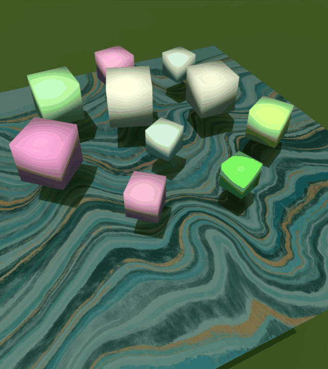
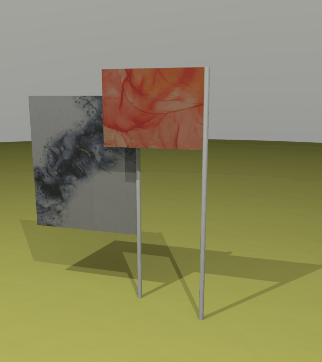
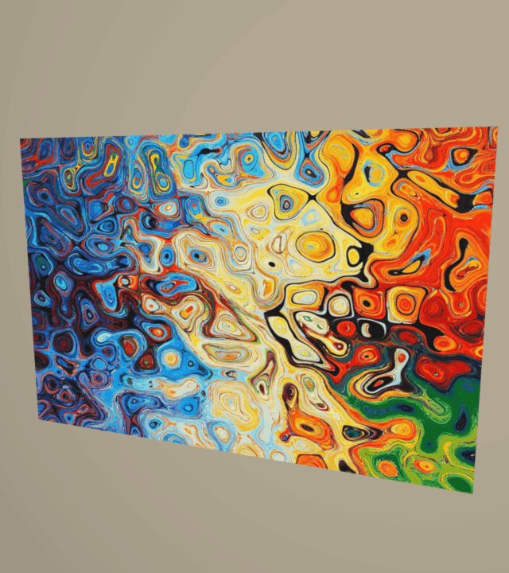

💨 Textile
Textile in PhysGaia

Basin

Lucy

Flags

Single flag
About Textile in PhysGaia
The textile in PhysGaia dataset represents the textile class, showcasing the dynamic behavior of fabrics, cloths, and other flexible sheet-like materials. These simulations capture the flowing, billowing nature of textiles under various conditions.
Physical Properties
- Flexibility: Ability to bend and fold in multiple directions
- Tensile Strength: Resistance to stretching and tearing
- Drape: Natural hanging behavior under gravity
- Wrinkling: Formation of complex fold patterns